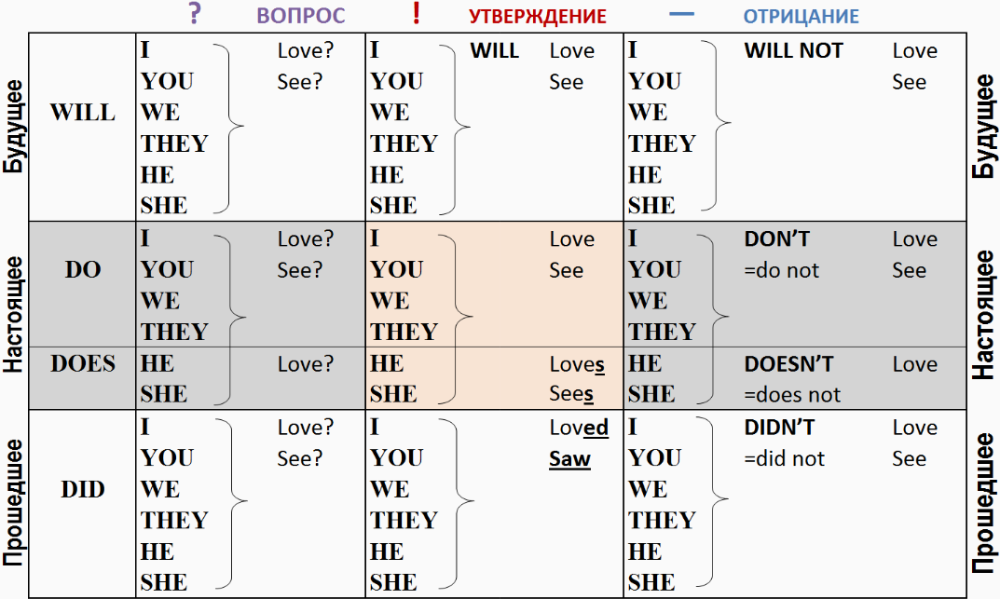
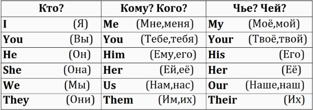
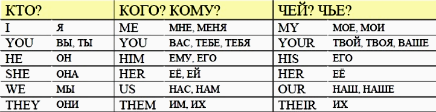
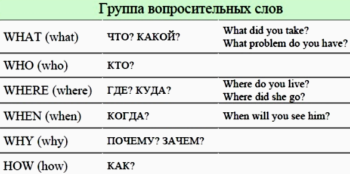
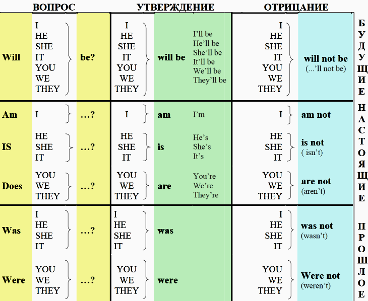
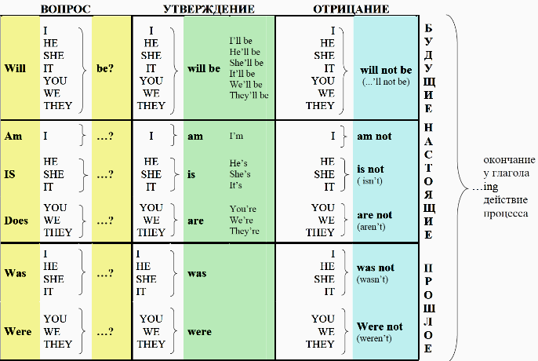
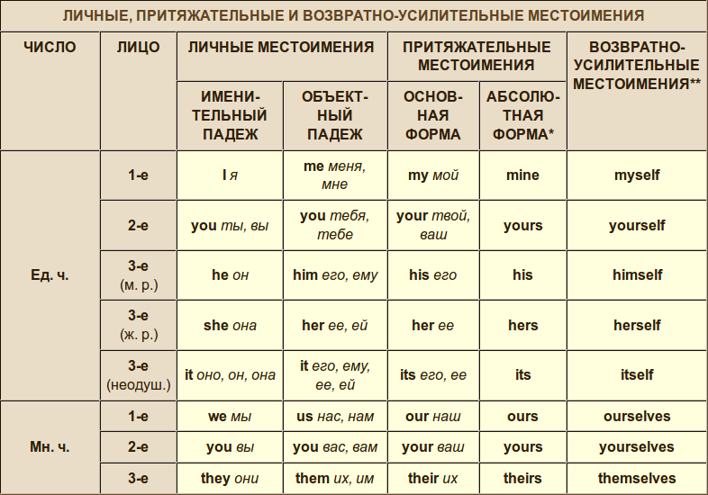
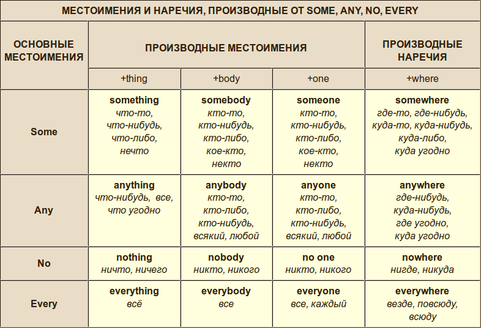

Картинки с таблицами времен, форм, местоимений, вопросов








* Абсолютная форма притяжательных местоимений переводится так же, как и основная, и употребляется вместо определяемого существительного во избежание повторения: This is her pen and this is mine. Это ее ручка, а это моя.
О местоимениях: http://study-english.info/pronoun.php